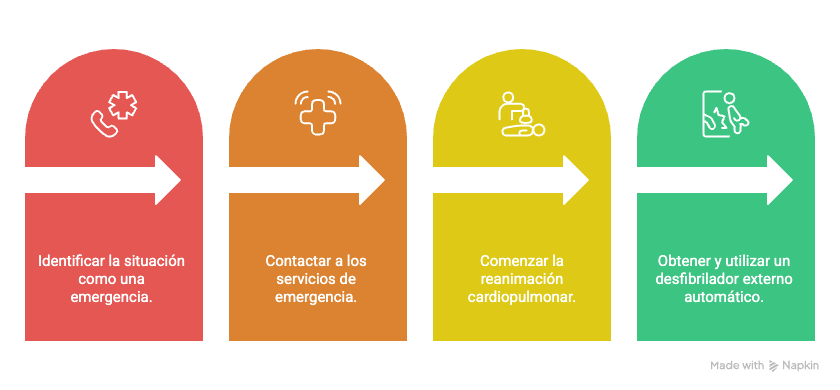

Importancia de la RCP temprana
Cuando una persona presenta parada cardíaca, el corazón deja de enviar sangre oxigenada al cerebro. En pocos minutos, la falta de oxígeno puede causar daño cerebral irreversible y muerte.
La RCP temprana ayuda a mantener una circulación mínima mientras llega ayuda especializada. Cada minuto cuenta. Cuanto antes se inicien las compresiones, mayor será la posibilidad de supervivencia.
El primer respondiente cumple un papel fundamental porque puede actuar durante los primeros minutos, antes de que llegue la ambulancia o el equipo médico.
Las 4 acciones clave

Porque cada minuto cuenta
La RCP temprana mantiene circulación hacia el cerebro
Sostiene el flujo mínimo de oxígeno mientras llega la ayuda especializada.
No pierdas tiempo esperando que la persona reaccione sola
Si no responde y no respira normalmente, actuá inmediatamente.